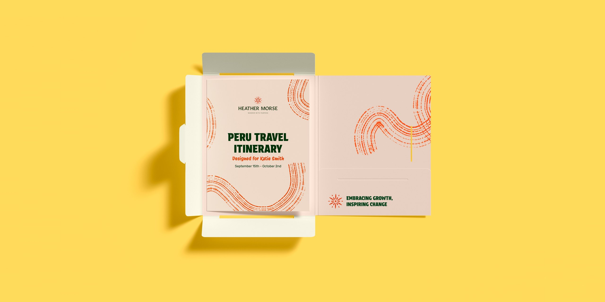

What to hand over first, and what to keep
You've decided you need help. Now the tricky part: what do you actually give away? Start with the wrong thing and you'll think “I could have done it faster myself.”
 By Julia Sonda · · 3 min read
By Julia Sonda · · 3 min read

Deciding to get design help is a big step. The next question catches a lot of studio owners off guard: what do I hand over first?
It matters more than it seems. Start with something vague and urgent, and the first experience will be stressful for everyone. You'll probably end up thinking “I could have done it faster myself”, and you'll be right, that one time. With the right kind of work, the first project shows you that delegating can work.
Keep: the things that are your agency
Some things should stay with you, at least for now. They're what your clients are really buying from you.
- The client relationship. The trust, the “I'll handle it”, the decision about who talks to whom. In a white-label setup it stays yours, even when the designer joins a call or two.
- Strategy and positioning. Why the brand exists, who it's for, how it should feel.
- Final approval. You decide what goes out with your agency's name on it. The creative direction can stay with your team or be shared with the designer, depending on the project.
- Scope and pricing. What's included, what's extra, what the timeline is.
Hand over first: work with clear edges
The best first projects are the ones where the inputs are clear and “done” is easy to recognize. For most studios, that's something like:
- Brand applications. The identity exists, now it needs stationery, signage, packaging variations or a new set of icons.
- Social media within guidelines. Monthly content or templates for a brand with an established look.
- Presentations and decks. Pitch decks, reports or proposals in a style that's already defined.
- Campaign adaptations. One key visual, twenty formats.
- Print production. Preparing final files with bleed, color profiles and everything the printer will ask for.
These have something in common: you can review them quickly, against something that already exists. That makes it easy to see whether the person you're working with gets your standards, without putting a whole project at risk.
Hand over next: projects with a direction
Once the first few projects go well, you can move to work that needs more thinking, as long as the direction is clear:
- Brand identity concepts, when the strategy is set, with you or the designer leading the creative direction.
- Creative direction itself, when you'd like someone experienced to set the visual direction of a project with you.
- Brand guidelines, turning an identity into a document a client can actually use.
- Packaging and print pieces that need real design decisions, not just adaptations.
This is where a designer who knows branding well adds the most. Brand identities are my favorite kind of work, so I'm a little biased here, but it's also where a good outside designer saves you the most hours. I wrote more about outsourcing a brand identity without losing control of it.
Be careful with: the vague and the on-fire
Some work is hard to delegate well, especially at the start of a new working relationship:
- “Make something cool for the launch” with no brief, no references and no budget. Even you would struggle with this one.
- Emergencies with the client watching. The first project shouldn't be the one where everything is late and everyone is stressed.
- Work that needs someone in the room. Workshops, in-person shoots, client meetings.
None of these is impossible to delegate. They're just better as the tenth project than the first.
A simple test
Before handing something over, try to write in one short paragraph what “done” looks like. Which files, in which formats, following which guidelines, by which date.
If you can write that paragraph, you can delegate the work. If you can't, the problem usually isn't the designer. The project just isn't defined yet, and that part is still yours.
How to make the first handover go well
- Choose something real but contained. Not a test project nobody will use, and not your biggest account.
- Share examples of work you consider good. Past projects, your checklist, the client's guidelines.
- Agree on check-ins. A look at the direction early on saves a lot of back and forth later.
- Give specific feedback. “The headline feels heavy next to the logo” helps far more than “not quite there”.
- Talk for ten minutes afterwards. What worked, what you'd do differently next time.
After two or three projects like this, the time you spend explaining drops a lot, and the time you get back starts to add up.
If you're figuring out what you could hand over in your own studio, tell me what's on your plate. I'm happy to help you think it through, even if the answer is “not yet”.